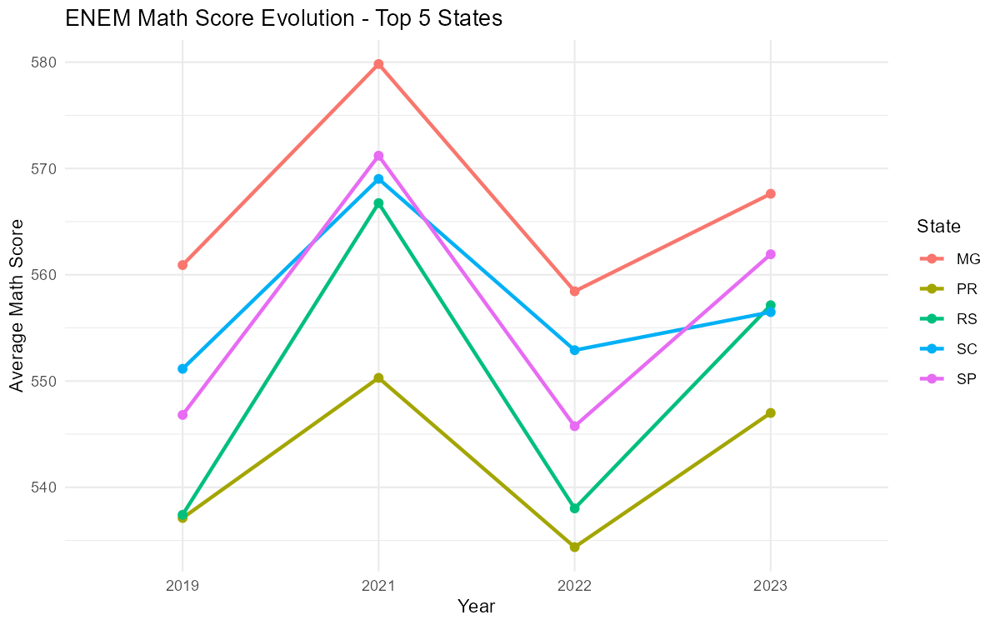
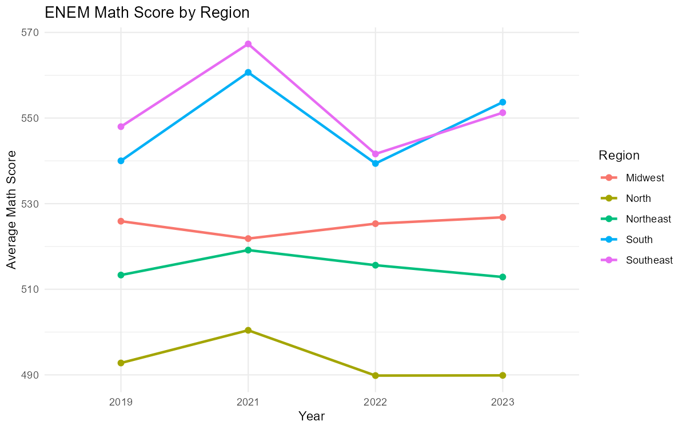
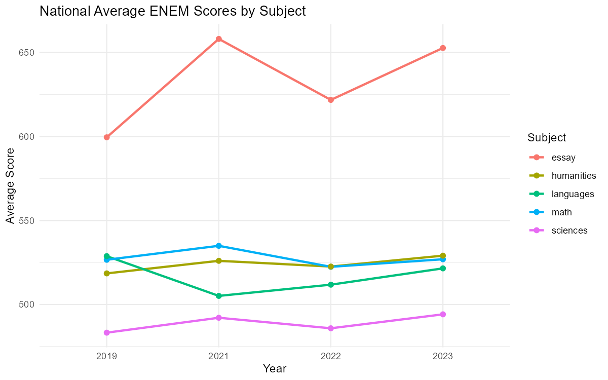

How has ENEM performance evolved by state?
Source:vignettes/enem-performance-by-state.Rmd
enem-performance-by-state.RmdThis vignette shows how to use educabR to analyze the evolution of ENEM scores across Brazilian states over time.
Downloading ENEM data for multiple years
ENEM microdata files are large (1-3 GB each), so we use
n_max to work with samples. For a full analysis, remove the
n_max parameter.
Average math score by state and year
scores_by_state <-
enem |>
filter(!is.na(nu_nota_mt), !is.na(sg_uf_prova)) |>
summarise(
mean_math = mean(nu_nota_mt, na.rm = TRUE),
n = n(),
.by = c(sg_uf_prova, year)
)
# Top 5 states in the most recent year
top_states <-
scores_by_state |>
filter(year == max(year)) |>
slice_max(mean_math, n = 5) |>
pull(sg_uf_prova)
scores_by_state |>
filter(sg_uf_prova %in% top_states) |>
ggplot(aes(x = factor(year), y = mean_math, color = sg_uf_prova, group = sg_uf_prova)) +
geom_line(linewidth = 1) +
geom_point(size = 2) +
labs(
title = "ENEM Math Score Evolution - Top 5 States",
x = "Year",
y = "Average Math Score",
color = "State"
) +
theme_minimal()
Score gap between regions
region_map <- c(
AC = "North", AP = "North", AM = "North", PA = "North",
RO = "North", RR = "North", TO = "North",
AL = "Northeast", BA = "Northeast", CE = "Northeast",
MA = "Northeast", PB = "Northeast", PE = "Northeast",
PI = "Northeast", RN = "Northeast", SE = "Northeast",
DF = "Midwest", GO = "Midwest", MT = "Midwest", MS = "Midwest",
ES = "Southeast", MG = "Southeast", RJ = "Southeast", SP = "Southeast",
PR = "South", RS = "South", SC = "South"
)
enem |>
filter(!is.na(nu_nota_mt), !is.na(sg_uf_prova)) |>
mutate(region = region_map[sg_uf_prova]) |>
summarise(
mean_math = mean(nu_nota_mt, na.rm = TRUE),
.by = c(region, year)
) |>
ggplot(aes(x = factor(year), y = mean_math, color = region, group = region)) +
geom_line(linewidth = 1) +
geom_point(size = 2) +
labs(
title = "ENEM Math Score by Region",
x = "Year",
y = "Average Math Score",
color = "Region"
) +
theme_minimal()
All five scores compared
enem |>
filter(!is.na(sg_uf_prova)) |>
summarise(
math = mean(nu_nota_mt, na.rm = TRUE),
languages = mean(nu_nota_lc, na.rm = TRUE),
humanities = mean(nu_nota_ch, na.rm = TRUE),
sciences = mean(nu_nota_cn, na.rm = TRUE),
essay = mean(nu_nota_redacao, na.rm = TRUE),
.by = year
) |>
pivot_longer(-year, names_to = "subject", values_to = "mean_score") |>
ggplot(aes(x = factor(year), y = mean_score, color = subject, group = subject)) +
geom_line(linewidth = 1) +
geom_point(size = 2) +
labs(
title = "National Average ENEM Scores by Subject",
x = "Year",
y = "Average Score",
color = "Subject"
) +
theme_minimal()